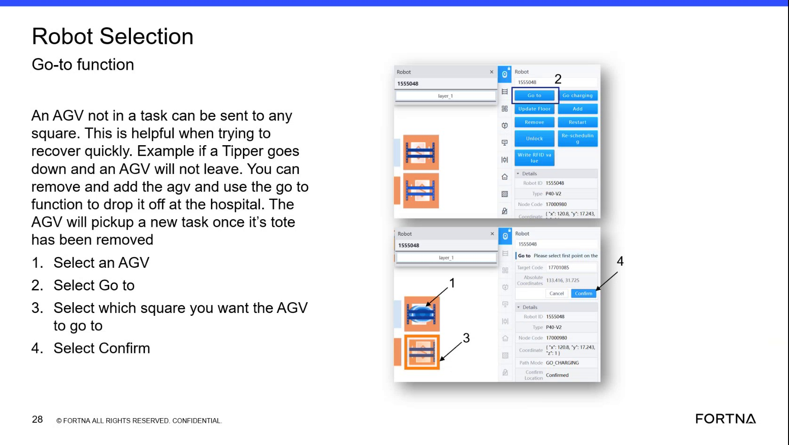

| Procedure ID | proc_view_rack_information_by_changing_the_display_and_reselecting_the_same_cell_v1 |
|---|---|
| Title | View Rack Information By Changing The Display And Reselecting The Same Cell |
| Procedure Type | reference |
| Primary Role | operator |
| Support Safe | Yes |
| Validation Status | needs_sme_review |
| Merge Status | source_finalized |
Change the display setting referenced in the training segment, then select the same cell again to show rack information for that cell.
Use when viewing a cell in the OptiSweep display and you need the interface to show rack information for that same cell, as described in the training segment.
Responsible role: operator
Instruction:
Change the displayed setting referred to in the training segment.
Expected result:
The display setting is changed from its prior state.
Screens / Images:

Stop or Escalate If:
Responsible role: operator
Instruction:
Select the same cell again after changing the display setting.
Expected result:
The same cell is reselected under the changed display setting.
Screens / Images:
Stop or Escalate If:
Responsible role: operator
Instruction:
Observe whether the display shows the rack information for that cell.
Expected result:
The selected cell displays rack information.
Screens / Images:
Stop or Escalate If: